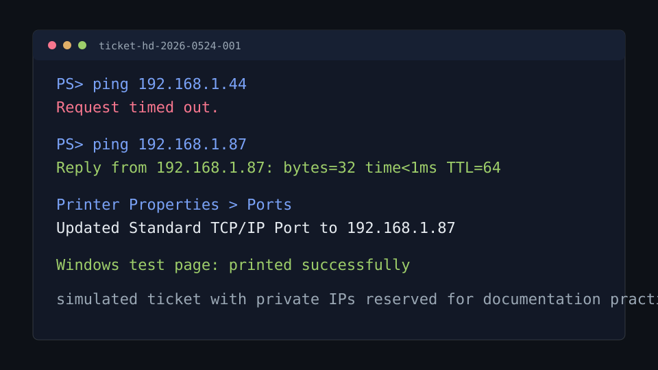

A draft support-ticket simulation for practicing intake, scope control, network checks,
printer port repair, validation, and a plain-language user update.
Objective
Practice a support workflow that starts with user impact, confirms scope, tests the simplest
network assumptions, fixes the Windows printer configuration, and closes with validation.
Environment
User reports a front-office printer as offline from a Windows 11 laptop.
Another workstation can print, so the problem is likely user-device specific.
The printer is reachable on the LAN, but the office recently changed router/DHCP settings.
Private IP addresses are documentation placeholders, not a real customer network.
Procedure
Confirmed the user could print to PDF, separating application print flow from printer delivery.
Confirmed another workstation could print to the same device, narrowing scope to one laptop.
Opened Windows Settings, then Printers and scanners, and confirmed the queue showed offline.
Compared the printer display IP with the laptop's configured Standard TCP/IP Port.
Tested the old and new printer addresses with ping.
Added a new Standard TCP/IP Port for the current printer address.
Printed a Windows test page, then asked the user to print the original form.
Example Validation Notes
PS> ping 192.168.1.44
Request timed out.
PS> ping 192.168.1.87
Reply from 192.168.1.87: bytes=32 time<1ms TTL=64
Printer Properties > Ports
Old TCP/IP port: 192.168.1.44
New TCP/IP port: 192.168.1.87
Windows test page: printed successfully

Illustrative screenshot-style note from the ticket simulation.
What Failed, Isolation, Fix
What failed: The laptop still sent print jobs to the printer's old TCP/IP port.
How I isolated it: Printing worked from another workstation, the old IP did not reply, and the new printer IP did reply.
How I verified the fix: Windows test page printed successfully, then the user's original form printed successfully.
User-Facing Update
Your printer was working, but your laptop was still sending print jobs to the printer's old
network address. I updated the printer port to the current address and confirmed that both
the test page and your form printed successfully.
Escalation Criteria
Printer cannot obtain an IP address.
Multiple users lose printer or network connectivity.
The printer responds to ping but print jobs fail for all users.
Printer deployment is controlled by print server, group policy, or endpoint management tooling.
The issue involves VLAN routing, firewall rules, or managed switch configuration outside first-line support permissions.